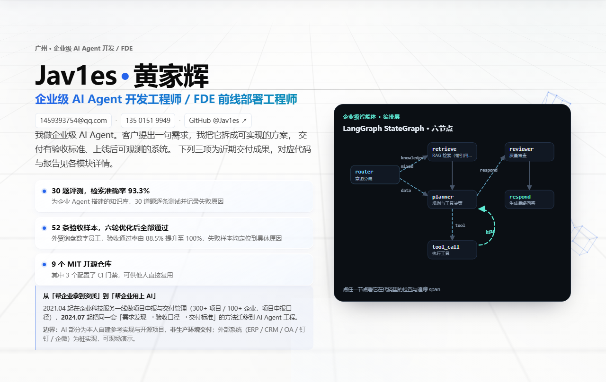

岗位方向 · VibeCoding / VibeEngineering
VibeCoding / VibeEngineering 工程师
示例站点 · 下方项目名称与描述为占位示例，可直接替换
用自然语言驱动编码，把想法快速变成能跑的原型。做创意编码、交互体验与视觉实验：先让效果出现，再用工程手段把它打磨成稳定、可访问、可交付的东西。
岗位职责
这个岗位具体做什么
围绕创意编码、交互体验与视觉实验展开的完整流程。
- 创意编码：以 VibeCoding 方式实现创意原型——先用自然语言快速生成可运行版本，再逐轮收敛细节与性能。
- 交互体验：设计并打磨动效、状态反馈与信息层级，让每一次点击都有明确、可预期的响应。
- 视觉实验：做配色、字体、留白与图形语言上的系统性探索，形成可复用的视觉规范而非一次性调参。
- 工程化收尾：用 HTML5、CSS3 与原生 JavaScript 实现，不引入重型框架，保证首屏加载速度与键盘可访问性。
- 原型转产品：把验证过的实验版本整理成可交付代码，交给后续迭代继续演进。
项目清单
创意与视觉实验
每个项目含名称、一句话背景与可查看的截图或链接。
-

示例项目 D：粒子响应式视觉实验
用原生 Canvas 做粒子场，视口尺寸与滚动位置实时驱动密度分布，验证轻量交互在低端设备上的帧率表现。
创意编码 Canvas 性能查看实验页面 示例链接（待替换） -
-